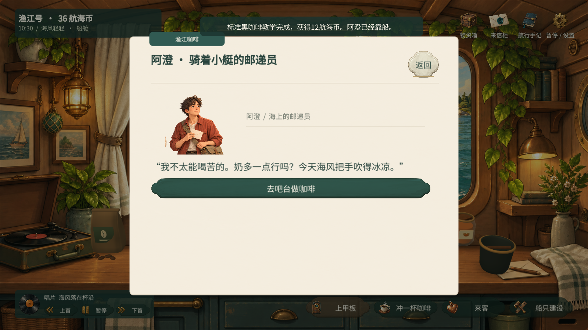
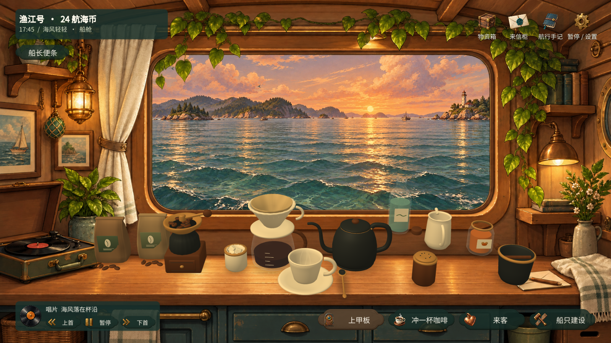

海上经营 · Unity / Windows
渔江咖啡.
开一间在海上漂流的咖啡馆。
玩家在甲板打捞物资和漂流瓶，回船舱冲泡咖啡，再用营业收入与材料改造渔船。

Windows 0.16.0 · 可玩开发版
捞到的东西，最后用在船上
漂到船边的常见物资可以顺手收。稀有物资要预判漂移、等它进入工具范围。升级鱼竿和网兜后，打捞范围和可收集的物品等级随之改变。
- 在甲板上收集咖啡原料、船材和漂流瓶。
- 回船舱按配方冲泡，给来客递杯，结算营业收入。
- 用收入和材料升级工具或船上设施，解锁新的打捞目标与来访条件。


冲泡可以随时停下，做错了也能重来
选器具、按住倾倒、松手停止，再加料或搅拌。做错可以弃杯重来。经营配方在完成出杯时扣料，递给来客后结算收入。

一杯咖啡，让来客的故事往下走
我用来客的订单和船上的设施串起人物任务。主线分五章，有八位人物和 44 个任务节点。人物故事完成后，打捞、来访和日常营业还能继续。
另一条故事入口是漂流瓶。120 封系统来信可以阅读、收藏、归档或放回海上。玩家短笺的投递和抽取已完成本机联调，当前默认离线收系统信。



回船舱可以暂时放下经营
从甲板点「回船舱」，就能听唱片、看海，也可以练习冲泡。舱内以分层插画保留暖木与灯光，桌上的器具是可单独操作的 3D 物件。窗外随本地昼夜变换，海面有缓慢的波光，偶尔会飞过一只海鸟。



我的策划与版本推进
我从「玩家可以只听海，也可以做一杯咖啡推进故事」出发，提出核心玩法、甲板与船舱的切换、来信与成长系统，并确定船舱画面和操作反馈的方向。AI 协助整理策划和界面流程、实现玩法和验证版本。
为了让冲泡时更容易看清杯口和液流，我在动作开始后收起器具用途提示，后续去掉桌前手臂和操作线，保留实际器具动作和配方进度。